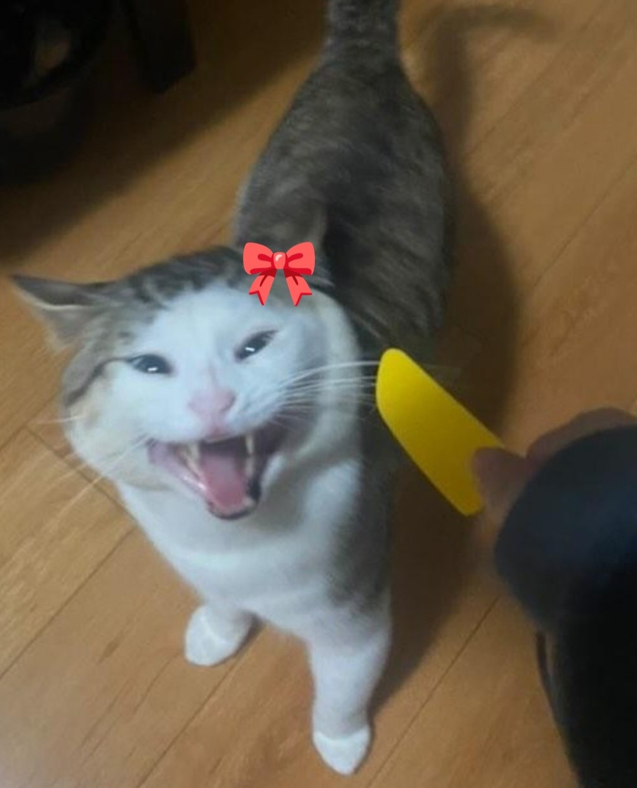
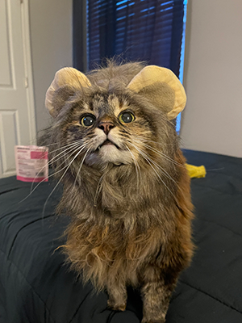

My image is interesting because it's a picture of a silly cat. How is that not interesting? The cat in the picture is my family's cat named Poobies. Even though I moved away when they adopted him, I still love him a lot for how unique he is and how much attitude he has. This image is related to my topic because I want to make a an archive of all the cats that I have personally interacted with. Some of the cats I'm planning to include are my two cats, Evie and Nori, Poobies, my friend's cats, Kobe and Eevee, and many more! Overall, the archive will probably convey that I am a crazy cat lady haha.
This image is about my partner's extremely cute cat who's cosplaying a lion (so ferocious!) The most interesting thing about the image is her? What else would it be? Her round eyes, her whiskers, her pattern, her expression. Everything about her is so cute and loveable. The most obvious thing about the image is how good of a girl she is. The most mysterious aspect of the image is how is she so well-behaved with the outfit on? Such a model. So cute. Deserves a million treats. I also found out later that her name is Ke$ha. How iconic is that?
Visual thinking is a skill as important as critical reading skills when reading a piece of text. Being able to decipher what each image means and what story it's trying to tell is the main part of visual thinking skills. It's very easy to overlook images or glance over them without giving it much thought. However, in order to reach a deeper understanding and get the full context, images must be carefully and critically analyzed. To achieve this, ask questions such as "what's going on in the image?", "how did the situation in the image potentially happened?", "why is the image or the situation the way it is?", etc. There's a rich story behind every picture, and it's up to us to find out more about them to reach a new level of understanding.
This article summarizes the best practices to use when incorporating overlay (or modals and dialogs). Overlays are best suited to be used to grab the user's attention, get input from the user, and show additional information both in and out of context from the main page. An effective overlay should include a way to close the overlay (a keyboard method like the escape key is good for accessibility), a descriptive title, clearly labeled buttons, a properly sized window at the right spot, and a way to focus on the overlay like a darkened background. Furthermore, the overlay should appear through the user's interaction rather than just randomly popping up. While overlays may be effective on a desktop, it is not advised to be used for mobile due to the limited space and the fact that there are better alternatives. Additionally, while there are instances where overlays are effective, overlays can be distracting by disrupting the user flow, and in some cases, users are trained to automatically close overlays so overlays should only be used when necessary.
This article summarizes all the best practices to use when incorporating forms into websites. Overall, the goal of using these practices is to minimize the mental load for the user which in all, improves their experience and encourages them to fill out the form. Some of the points that stood out to me that I will be applying to my design process are using a one-column layout, splitting large forms into multiple steps, asking the easy questions first to avoid form abandonment, being mindful of the label position, don't use a placeholder (this one is surprising for me), and asking "I want to _" to come up with a button label. One of the things that I strongly agreed with is having a matching keyboard type for the information needed since this has been a pet peeve of mine.